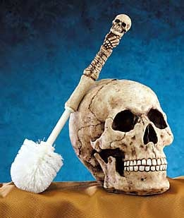

Escobilla del váter
 De: La Frikipedia, la enciclopedia extremadamente seria.
De: La Frikipedia, la enciclopedia extremadamente seria.

|
La información contenida en este artículo es una mínima parte de su jugo total, así que ponte los guantes, saca el tupperwere y empieza a exprimir el tema. Si lo haces serás recompensado con una galleta en almíbar y algo más.
|
| De la serie animales y otros bichejos:
|
|
|
| Nombre común:
|
Escobilla de váter
|
| Nombre científico:
|
Limpius Váterus
|
| Especie:
|
Objeto
|
| Subespecie:
|
Limpiador
|
| Alimentación:
|
Cacas
|
| Apariencia:
|
Similar a un palo
|
| Hábitat natural:
|
Casas
|
| Localización:
|
Váteres
|
| Número aproximado de ejemplares:
|
Infinito
|
| Fecha de extinción:
|
Núnca mientras caguemos
|
| Pokemonización:
|
Escobilla del váter calavera
|
 Típica escobilla del váter
Varita mágica con poderes chachi pistachi causados por ondas electromagnéticas producidas la mitad por la absorción de la energía del sol, la otra mitad por la fuerza liberada de los humanos al cagar. Se ancuentra al lado del trono de todo cuarto de baño (excepto de aquellos que dicen tener abducciones por seres generados en el inframundo del depositorio de la escobilla [Verídico]). Fue creada por Diox en un momento de inspiración super malvada dándole la idea el mismo inventor de la escoba, un antepasado de Manolo Escobar, sólo que fue después de pasarse al Lado Oscuro de la Fuerza, por tanto, es un invento aspañol. Y es que ya lo dice el refrán: "Café y pan con tomate, escobilla al rescate".
Propiedades
Entre sus poderes se encuentran:
- El líquido azul que se dice que si te lo bebes puede matarte o enviarte al cielo, nadie lo ha verificado todavía.
- Las hebras increíbles, con el que se dice que es capaz de limpiar de cualquier superficie restos orgánicos de color marrón, y se dice que su poder aumenta cuanto más liquidos estén los restos.
- La amenaza catastrófica que se dice que cualquier persona a la que le acerques este fantástico objeto sufrirá unas nauseas terribles que le privaran de cualquier poder o voluntad.
- Un golpe de escobilla del váter puede ser mortal,sobre todo si se ha dado su principal uso previamente.
Usos
- Como arma, usualmente por amas de casa cuando entran ladrones y canis a la casa.
- El Rey Inodoro II, como cetro de su vasto poder retrético.
- Como cepillo...Epa! que hay personas que lo usan.
- Para colgarse con una cuerda a una polea, lanzarla por la ventana a la casa vecina, darle a la ventana, jalar de la cuerda, accionar el interruptor de al lado de la puerta que abre una compuerta a una sala de laboratorio oculta, examinar los datos de la computadora, guardar los datos en la Escobilla de váter, golpear con ella al científico y al teletubi que salen del baño, salir por la ventana y volver a tus manos.
- Como silbato(Sí, hay gente que pimpea sus escobillas del váter).
Notas
- Existe un dicho que dice más vale escobilla en mano que patada en los huevos.
- La escobilla del váter fue el término más buscado en los buscadores de todo el mundo el año pasado.
- En una encuesta se determinó que el 80% de la gente se siente más segura con una escobilla del vater que con un arma de fuego.
- Se dice que si te lavas los dientes con la escobilla del váter podrás ver a través de las paredes si sobrevives. Pero 458 personas lo han intentado y todas están muertas por lo que sigue sin verificarse...
- Afortunadamente,la dominación que ejerce la Escobilla del Váter no es igual en todo el mundo. La población de países como los Hehe!!! Uhuh!!! o Canadá están subyugados a ese control de mierda -nunca mejor dicho- debido a que dejan la Escobilla en el suelo del baño, sin contenedor de ningún tipo para guardarla, controlar sus efluvios y, lo más importante: que no ensucie el suelo.
Autor(es):
- Nexo
- Fordus
- MURO DE AGUAS
- Aque
- Viento
- Khazike Khashondo
- Urtys
- Jaimex89
- Conan
- Zulhen
Frikipedia 2005-2016, Licencia
GFDL 1.2 - Extraído por FrikiLeaks